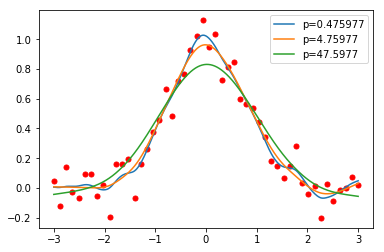

Computational Physics - numerical methods, data science and statistics
The purpose of the course is to get aquainted with modern computational methods used in physics, including numerical analysis methods, data science and statistics. We will also explore numerical and statistical methods that have been inspired by physics and/or created by physicists. Historically many of the methods have been developed for physics applications, a trend that continues today with more modern examples like Metropolis algorithm, simulated annealing and Hamiltonian Monte Carlo.
Each week there will be a set of lectures discussing theoretical and practical underpinnings of the specific topic, together with its most common applications in physics and astronomy, followed by a homework assignment applying the methods to physics and astronomy based applications.
Syllabus
-
Function Integration: trapezoidal, Simpson, Romberg, gaussian quadratures
-
Special functions and function evaluation: Gamma, Bessel, spherical harmonics, function derivatives
-
Solving Linear Algebra: Gauss elimination, LU and Cholesky decomposition, singular value decomposition, sparse algebra
-
Eigensystems and matrix diagonalization, principal component analysis
-
Nonlinear sets of equations: relaxation, bisection, Newton's method
-
Optimization (minimization/maximization): steepest gradient descent, stochastic gradient descent, conjugate gradient, Newton and quasi-Newton (BFGS)
-
Interpolation and extrapolation of data. Polynomial, rational and spline interpolation, gaussian process
-
Fourier transforms: FFT, convolutions, power spectrum and correlation function, optimal (Wiener) filtering, wavelets
-
Ordinary differential equations: Euler, Runge Kutta, Bulirsch-Stoer, stiff equation solvers, leap-frog, boundary value problems
-
Partial differential equations: boundary value and initial value problems
-
Statistics: Bayes theorem, priors and posteriors, maximum likelihood and maximum a posterior, linear and nonlinear model fitting of data. Error estimation: covariance and Fisher information matrix, jackknife, bootstrap
-
Random processes and statistics: random number generators, Monte Carlo integration, Metropolois algorithm, Markov Chain Monte Carlo, Gibbs sampling, importance sampling, Hamiltonian Monte Carlo, simulated annealing
-
Classification and Inference with Machine Learning and Bayesian Statistics: Gaussian mixtures with expectation maximization algorithm, Variational Bayes, Decision Tree-Based methods, Support Vector Machines, MultiLayer Perceptron and other backpropagation neural network algorithms
Literature
Computational Physics by Mark Newman
Numerical Recipes, by Press. W. etal. http://numerical.recipes
An Introduction to Statistical Learning, by James G. etal, http://www-bcf.usc.edu/~gareth/ISL/ISLR%20Sixth%20Printing.pdf
A Survey of Computational Physics by Landau, R., Paez, M-J., Bordeianu, C. free downlaod at http://www.compadre.org/psrc/items/detail.cfm?ID=11578
Other resources will be provided according to the needs (e.g. https://arxiv.org/pdf/1505.02965.pdf ...)
Software
you are expected to use existing numerical analysis routines and not write your own. Many of these are already implemented in python libraries (scipy, numpy...), or you can call Numerical Recipes C++ routines (as well as other) from python. See http://numerical.recipes for details. Routines that go with Landau's book are at http://www.science.oregonstate.edu/~landaur/Books/CPbook/Codes/PythonCodes/
Prerequsites
basic introduction to Python programming at the level of PHY77, or first 4 chapters of Newman's book
Homeworks
weekly, Jupyter notebook in Python submissions
No final exam, but a final project for graduate students